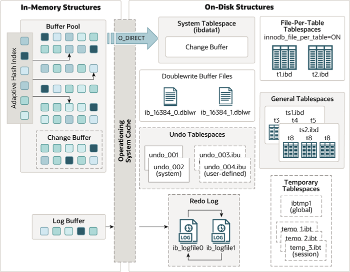
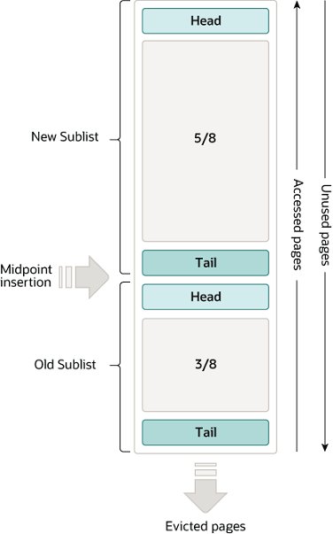
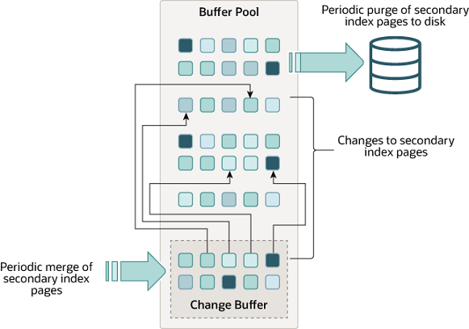
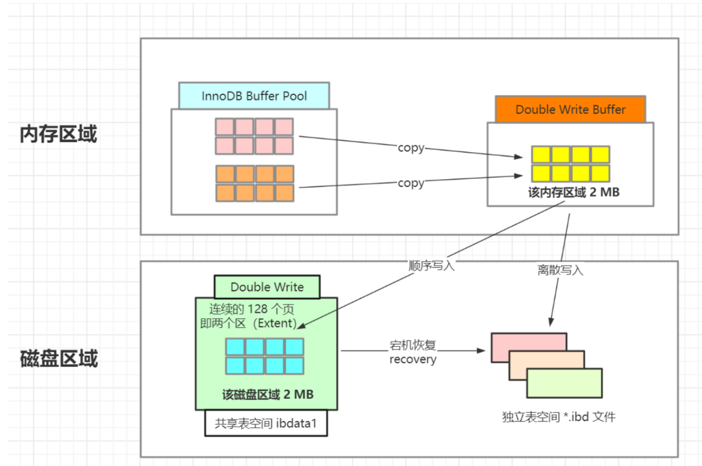

02 体系结构
1 缓冲池 Buffer pool¶
Table 1.1 Innodb架构
Abstract
缓冲池：内存中的一块区域，通过缓存表数据和索引数据，把磁盘上的数据加载到缓冲池，避免每次访问都进行磁盘IO，加速访问（把“最热”的数据放到“最近”的地方，以“最大限度”降低磁盘访问）
预读
-
操作系统的磁盘读写为按页读取，
一次至少读一页数据（一般是4K），如果未来要读取的数据就在页中，就能够省去后续的磁盘IO，提高效率数据访问通常都遵循“集中读写”的原则，使用一些数据，大概率会使用附近的数据，即“局部性原理”，提前加载能减少磁盘IO
缓冲池 LRU（Least Rrecently Used）算法

LRU分为两部分:
- New Sublist
New 链表热点数据 - Old Sublist
Old 链表
- 频繁使用的页在
New 链表的前端，最少使用的页在Old链表的尾端。当缓冲池无法存放新读取到的页时，首先释放Old链表末端的页； - 缓冲池中页的大小默认为
16KBOS中页的大小默认为4KB New Sublist和Old Sublist首尾相连
Example
Summary
2 检查点 Checkpoint¶
解决问题：
-
- 缩短db恢复时间
- 缓冲池不够用时讲脏页刷新到磁盘
- redo log不可用时，刷新脏页
检查点分类
Fuzzy checkpoint
Master thread checkpoint
- 异步缓冲池的脏页列表中刷新一定比例的页到磁盘中
FLUSH_LRU_LIST checkpoint
- LRU链表可用空闲页 < ? 时，innodb会将LRU列表尾端的innodb_lru_scan_depth个页移除，如果这些页中有脏页，那么需要进行checkpoint
Async/sync flush checkpoint
- 当redo log不可用时，将脏页从脏页列表中刷回磁盘
Dirty page too much checkpoint
- 脏页的数量太多
> Innodb_buffer_pool_pages，导致强制进行Checkpoint
3 Master Thread¶
Innodb中的 Master Thread 是后台运行的线程，大多数任务都是I/O相关的，包括：
- 将日志缓冲刷新到磁盘[
redo log...]，即使事务还未提交 - 合并 insert buffer
- 最多刷新100个缓冲池中的脏页到磁盘
- ...
4 Innodb关键特性¶
4.1 Change Buffer¶

结构
物理页 bptree
使用条件
-
non-unique secondary indexes 非唯一辅助索引
-
primary key 和 clustered indexes 按顺序插入，非随机IO
-
写唯一索引需要判断索引是否存在，将修改记录相关的索引页读出来（读操作）
-
WHY
- 非唯一辅助索引的修改操作并非实时更新索引的叶子页，而是把若干对同一页面的更新缓存起来做，合并为一次性更新操作，减少IO同时
随机 IO=>顺序 IO，避免随机IO带来性能损耗，提高数据库的写性能
HOW IT WORKS
-
判断更新的页是否在缓冲池中
Yes: 直接 updateNo: 存入 change buffer，合并非唯一索引和索引页的页子节点
4.2 两次写 doublewrite¶

HOW IT WORKS
doublewrite在磁盘上有一块专门的存储区域，InnoDB 刷脏页到磁盘时，先将页面写到存储区，然后再将页面写入到InnoDB数据文件中。doublewrite加重了磁盘IO的负载，但是能够保证异常场景下的数据完整性。
doublewrite 保证数据完整性
InnoDB 页面默认大小16KB，操作系统一次写入的块大小默认为4KB，传统的磁盘块大小为512字节，因此MySQL的一个页面要写入到磁盘，需要分批进行写入，分批写入不是原子操作，在写入的过程中，如果发生异常，那么一个16KB的页面，就有可能只有部分数据成功写入到了磁盘，导致页面数据被写乱（页损坏）。InnoDB崩溃恢复时，发现页损坏，就能从doublewrite存储区拿到完整的页面，顺利执行崩溃恢复过程。
4.3 自适应哈希索引 Adaptive hash indexing (AHI)¶
innodb_adaptive_hash_index
HOW IT WORKS
-
- 索引
bptree增多 bptree逐层定位，检索数据页时间成本上升- 建立缓存
AHI根据检索条件，直接查询对应的数据页
- 索引
使用条件
-
- 某个
bptree要被使用足够多次 - 该
bptree上的检索条件要被经常使用 - 该
bptree上的某个数据页要被经常使用
- 某个
4.4 异步 IO¶
innodb_use_native_aio
4.5 刷新临接页 Flush Neighbor Page¶
inodb_flush_neighbors
HOW IT WORKS
- 刷新一个脏页时，Innodb会检测该页所在区
extent的所有页，如果是脏页，则一起刷新。